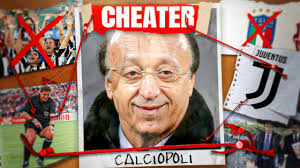

Skandal Calciopoli: Mengungkap Kecurangan di Balik Kejuaraan Serie A
Italia, 2006 –Calciopoli, salah satu skandal terbesar dalam sejarah sepak bola, mengungkapkan betapa dalamnya praktek kecurangan dan manipulasi yang terjadi di balik kompetisi Serie A Italia. Skandal ini, yang meledak pada tahun 2006, mengguncang dunia sepak bola dan mengubah wajah kompetisi sepak bola Italia selamanya. Skandal ini tak hanya melibatkan klub-klub besar seperti Juventus, AC Milan, Internazionale, dan Fiorentina, tetapi juga mencakup sejumlah wasit, pejabat sepak bola, serta beberapa individu di dalam Federasi Sepak Bola Italia (FIGC).
Awal Mula Kasus Calciopoli: Skandal Calciopoli bermula dari penyelidikan yang dilakukan oleh otoritas Italia mengenai dugaan pengaturan hasil pertandingan di Serie A. Investigasi ini dimulai setelah adanya rekaman percakapan telepon yang mengindikasikan bahwa sejumlah klub dan wasit telah terlibat dalam pengaturan pertandingan dan keputusan-keputusan yang menguntungkan klub-klub tertentu. Percakapan tersebut menunjukkan bahwa para pejabat sepak bola Italia, termasuk direktur olahraga dan perwakilan klub, berkolusi untuk mempengaruhi pemilihan wasit yang akan memimpin pertandingan, dengan tujuan memastikan hasil pertandingan yang menguntungkan klub-klub tertentu, terutama bagi Juventus yang saat itu tengah mendominasi Serie A.
Tim-Tim yang Terlibat dan Hukuman yang DikenakanSetelah penyelidikan yang mendalam, terungkap bahwa beberapa klub besar terlibat dalam pengaturan pertandingan. Juventus, klub yang saat itu menjadi juara Serie A, terungkap sebagai pihak yang paling terlibat dalam skandal ini. Giovanni Cobolli Gigli, Presiden Juventus saat itu, bersama dengan Direktur Olahraga Luciano Moggi, menjadi tokoh utama yang terlibat dalam pengaturan hasil pertandingan. Dalam proses hukum yang panjang, Juventus dihukum dengan pencabutan gelar Serie A 2004-2005 dan 2005-2006. Mereka juga dijatuhkan hukuman degradasi ke Serie B dan dikenakan pengurangan poin yang besar di musim berikutnya. Selain itu, beberapa eksekutif klub, termasuk Moggi, dijatuhi hukuman penjara karena peran mereka dalam skandal tersebut. AC Milan, Fiorentina, dan Lazio juga terlibat dalam pengaturan wasit, meskipun mereka tidak dihukum dengan degradasi seperti Juventus. Namun, mereka semua mendapat pengurangan poin untuk musim tersebut dan beberapa sanksi lainnya. Sebagai hasil dari penyelidikan dan hukuman yang dijatuhkan, Internazionale dinyatakan sebagai juara Serie A musim 2004-2005 dan 2005-2006 setelah Juventus dicopot dari gelar mereka. Meskipun Inter merasa keberuntungan mereka sedikit tercemar oleh fakta bahwa mereka meraih gelar melalui pengaturan yang terungkap, mereka akhirnya mengangkat trofi tersebut.
Dampak pada Sepak Bola Italia: Skandal Calciopoli memberikan dampak besar terhadap sepak bola Italia. Tidak hanya mempengaruhi reputasi klub-klub besar, tetapi juga mencoreng citra sepak bola Italia di mata dunia. Sanksi-sanksi yang dijatuhkan kepada klub-klub besar memaksa mereka untuk berbenah dan mereformasi struktur internal mereka. Juventus, misalnya, harus memulai kembali dari Serie B, yang membuat mereka menjalani musim yang penuh tantangan dan rasa malu. Namun, meskipun mendapatkan hukuman berat, skandal ini juga memberikan efek jangka panjang yang positif bagi sepak bola Italia. Proses reformasi dimulai di seluruh tingkat sepak bola, dengan peningkatan transparansi dan pengawasan yang lebih ketat terhadap keputusan-keputusan yang dibuat oleh para pejabat sepak bola, termasuk penunjukan wasit. Ini berkontribusi pada perbaikan dalam kompetisi, meskipun bekas luka dari Calciopoli tetap sulit untuk dihapuskan. Selain itu, skandal ini juga mengubah cara media dan penggemar memandang sepak bola di Italia. Kepercayaan terhadap otoritas sepak bola dan integritas kompetisi mulai dipertanyakan, meskipun di sisi lain, hal ini juga mendorong masyarakat untuk lebih berhati-hati dalam mengkritisi kecurangan dalam sepak bola.
Kehidupan Setelah Calciopoli: Bagi Juventus, Calciopoli menjadi titik balik yang sulit. Meskipun mereka terdegradasi ke Serie B dan kehilangan gelar juara mereka, klub ini berhasil bangkit kembali, hanya dalam waktu dua musim, mereka kembali ke Serie A dan meraih kejayaan lagi. Juventus kembali menjadi kekuatan dominan di sepak bola Italia, meskipun jejak sejarah dari skandal tersebut selalu membayangi mereka. Sementara itu, para pelaku utama dalam skandal Calciopoli, seperti Luciano Moggi, juga menghadapi konsekuensi hukum yang serius. Meskipun mereka dihukum di pengadilan, beberapa pihak merasa bahwa hukuman yang dijatuhkan tidak cukup berat mengingat dampak besar yang ditimbulkan oleh skandal ini.
Refleksi dan Kenangan: Kasus Calciopoli tetap menjadi salah satu babak gelap dalam sejarah sepak bola Italia. Namun, skandal ini juga mengajarkan banyak hal kepada dunia sepak bola tentang pentingnya transparansi, keadilan, dan integritas dalam setiap aspek kompetisi. Meskipun beberapa pihak merasa bahwa perbaikan yang dilakukan setelah skandal tersebut belum cukup menyeluruh, tidak bisa dipungkiri bahwa pengaruh Calciopoli tetap mempengaruhi cara klub dan federasi sepak bola di Italia bekerja hingga saat ini. Kepercayaan publik terhadap sepak bola Italia mungkin telah tercemar, tetapi setelah bertahun-tahun, dunia sepak bola kembali melihat ke arah Serie A dengan harapan yang lebih positif. Namun, nama Calciopoli akan terus dikenang sebagai pengingat akan pentingnya menjaga integritas dalam setiap pertandingan.
Apa Pendapat Anda? Bagaimana pandangan Anda terhadap dampak jangka panjang dari Calciopoli pada sepak bola Italia? Apakah Anda rasa hukuman yang dijatuhkan sudah cukup, atau masih ada aspek yang perlu diperbaiki dalam sistem sepak bola Italia? Berikan pendapat Anda di kolom komentar!

Berikan Pendapat Anda